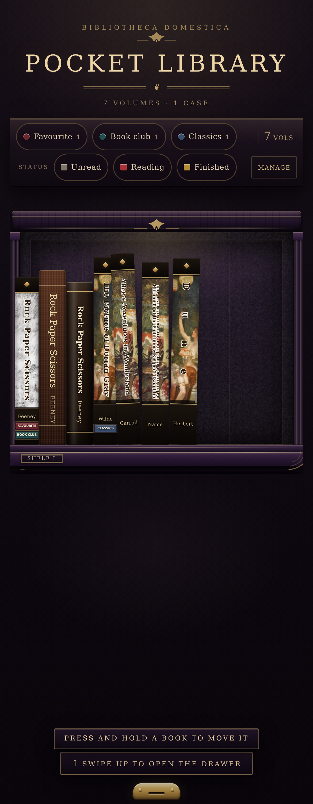
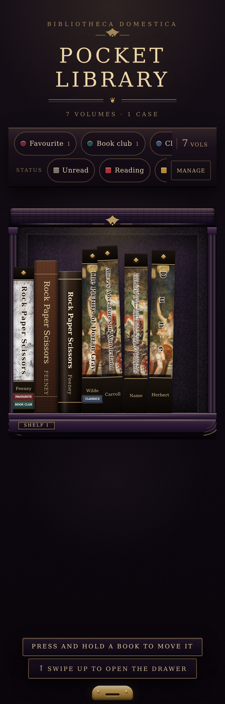
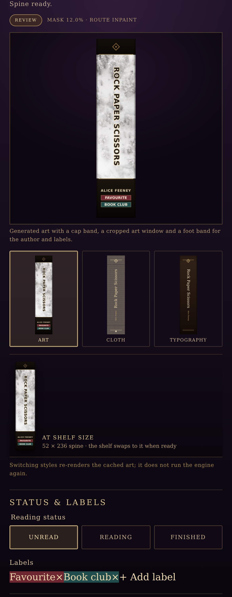
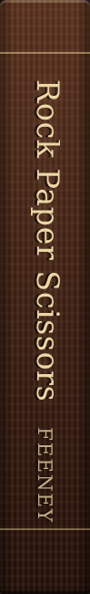
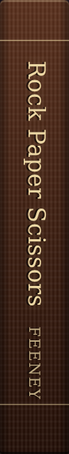
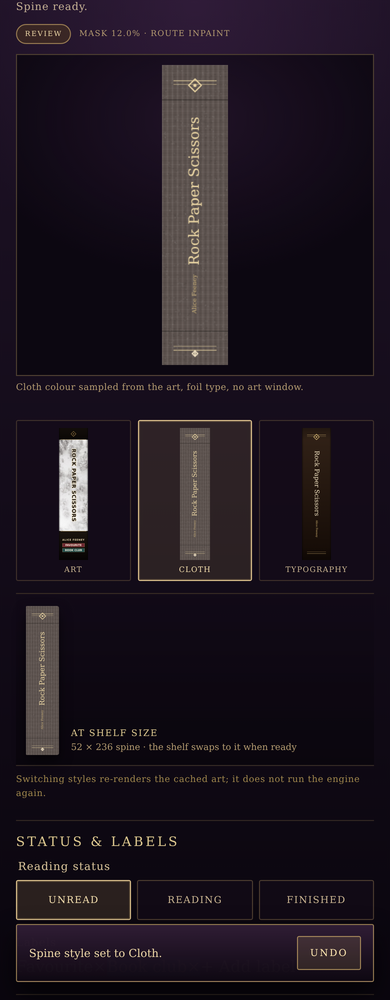
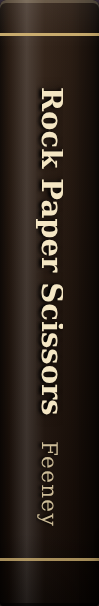
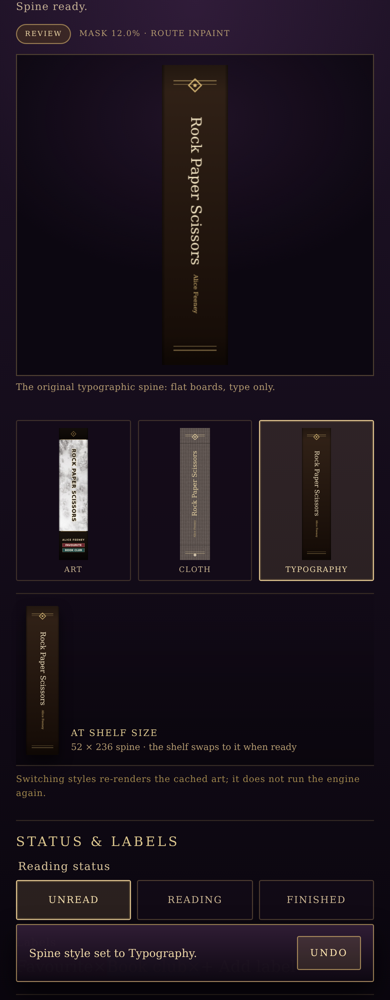

Rendered from the real app UI with real engine art. Nothing here is a mockup. The first four spines use the same cover so you can compare the treatments directly.


Generated art cropped between a cap band and a foot band for the author and labels.

No art. Woven cloth board with foil type.



No art. The original flat board and typographic face.


Compare against the original studies: the prototype index (v4-wrap, v4-generative, v8-auto, app-renderers). These are the reference for the original look, not the current app.
If any of these are wrong, say which style and what you want changed — this page is the approval gate before the APK.